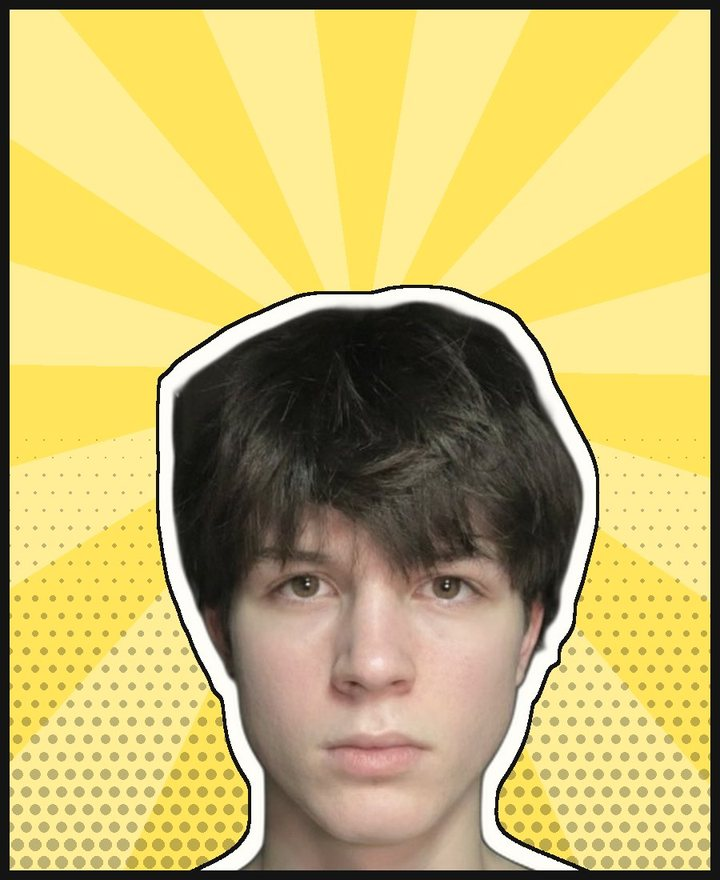
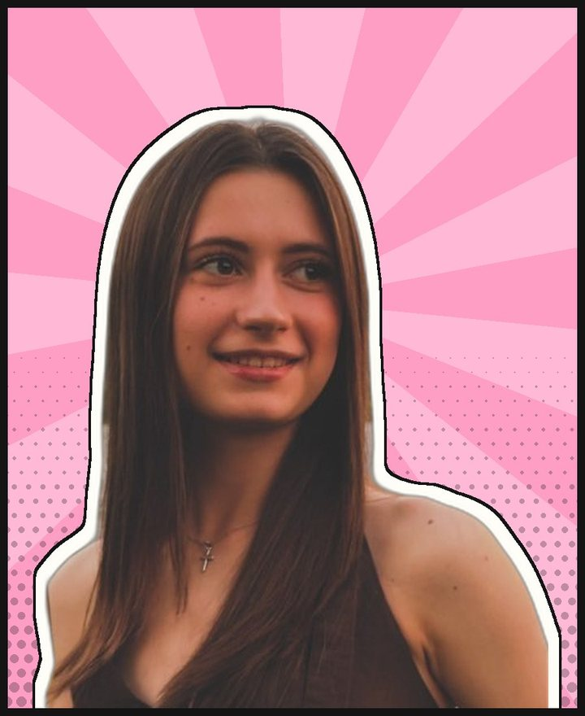

0:00 – 0:0301
Hook · inel deschidere
Cutia FRAGIL intră prima
Cadru simetric din fundul liftului. Ușile se deschid, El intră cu o cutie mare pe care abia o ține. Afișajul arată P.
Scenariu · reclamă · efectul fluture
Client: Hamal.md
1:06 · 16:9 · Fujifilm X-T5
Liftul Mediacor
Distribuția · fără replici


Doi vecini care nu-și vorbesc ajung, printr-o ușă de lift redeschisă în ultima secundă, să-și mute viața împreună. Literal.
Efectul fluture
Publicul crede 46 de secunde că privește o poveste de dragoste. Abia la twist află că e o reclamă pentru o firmă de mutări.
„Am mutat mii de vieți. Unele doar un etaj mai sus.”
1:06, secundă cu secundă
Fiecare bloc e o scenă, la lungimea ei reală. Povestea ține până la 0:58, apoi partea dinamică a piesei cade pe logo.
Scenele 01–04
Cadru simetric din fundul liftului. Ușile se deschid, El intră cu o cutie mare pe care abia o ține. Afișajul arată P.
Ușile se închid în fața Ei, se vede dezamăgirea prin deschizătură. El apasă cu cotul butonul. Ea intră repede, dă din cap a mulțumire și apasă 3.
A doua zi, pe metalul de lângă butoane: „Mersi pentru ușă. – 3”. Altă zi, răspunsul dedesubt: „Oricând. – 2”.
Același unghi fix pe peretele cu butoane. Bilețelele se adună, gecile se schimbă. Fiecare citește singur și zâmbește.
Scenele 05–08
Trec pe mesaje: „Coborâm împreună?”. În același cadru, distanța scade zi de zi. Într-o dimineață, Ea adoarme pe umărul lui.
Un singur bilețel pe metalul gol. Fața Ei se întunecă. Liftul pleacă gol, ușile se închid fără nimeni.
La ușa Ei stau cutiile lui. Pe cutia FRAGIL, un bilețel: „Mă mut. La tine. (Dacă vrei.)”
Ea își acoperă gura cu mâna. Se întoarce: El stă pe o cutie lângă perete, cu cutia FRAGIL în brațe.
Scenele 09–11
Ea se uită spre El și zâmbește. Macro pe mâna Ei pe cutia FRAGIL. Muzica se oprește o clipă.
Prima apariție a firmei: logo-ul cade pe partea dinamică a remixului. Tăieturi pe beat: bandă trasă, cutii închise. Vocea lui El citește sloganul.
Același cadru ca la început. Cutia FRAGIL, dusă acum de amândoi. Pe ecran, contactele Hamal.md.
Primul cadru = ultimul cadru.
Diferența dintre ele e toată povestea: un om singur cu o cutie, apoi doi oameni cu aceeași cutie.
Fără replici
Animatic · 34 de pași · liftul de la Mediacor
Stânga: liftul văzut de sus, cu camera și actorii. Dreapta: ce vede camera. Pașii merg singuri; îi poți opri sau alege din listă.
Schițele sunt orientative. Liftul are sticlă în față, în stânga și în dreapta când intri; singurul perete de metal e cel cu ușa, iar butoanele sunt pe el, în stânga când intri. Bilețelele se lipesc pe acest metal, lângă butoane. Păstrează ordinea pozițiilor: termini o poziție a camerei complet, apoi te muți și nu te mai întorci.
Shot list · 34 de pași · 5 poziții
O poziție a camerei se termină complet, apoi te muți și nu te mai întorci. Pe clachetă scrii codul din stânga și adaugi dubla: SC 2 · 2B · D3. Ultima coloană e ținuta; actorii schimbă doar haina de deasupra.
16:00–17:30 · Trepied lipit de peretele din spate, pe centru, la 1,30 m · 18 mm · 24 fps
17:30–18:45 · Trepied lângă butoane, pe diagonală · 35 mm · camera la înălțimea ochilor
18:45–19:15 · Pauza actorilor · trepied la 45° față de peretele de metal cu butoane · 35 mm · același unghi
19:15–20:30 · Toți în ținuta 4 · cutiile aranjate la ușă, cu bilețelul 8 pe cutia FRAGIL
20:30–21:15 · Fără actori · vocea lui El se înregistrează separat
21:15–21:45 · rezervă pentru dublele ratate · 10B (logo-ul animat) se face în Premiere Pro
Un gest mic schimbă tot